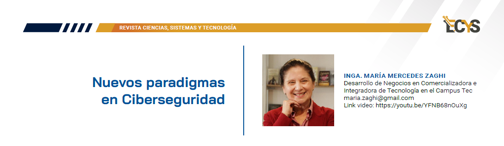

16 Nuevos paradigmas en Ciberseguridad

YouTube: https://youtu.be/YFNB68nOuXg
16.1 Entrevista
¿Quién es María Mercedes Zaghi?
Yo estudié computación porque me gustaba en una época donde era muy difícil que las mujeres hicieran eso y gracias a Dios pues a lo largo de mi carrera nos ha tocado trabajar con proyectos muy claves en Guatemala, o sea que yo estoy muy contenta de poder colaborar ahora, dicen que es una coincidencia que haya sucedido esto, pero me alegro que me haya pasado a mí porque hemos trabajado desde el primer nodo de internet hasta ahora que estamos viendo imagínate parques tecnológicos y cosas gigantes o de ciberseguridad, que es lo que vamos a hablar el día de hoy, ¿verdad?
¿Cómo se pueden evaluar y gestionar los riesgos de seguridad en una infraestructura tecnológica?
Los riesgos en tecnología es lo mismo que cualquier modelo de riesgo, ¿no? Y tenemos que lo que buscar es realmente tener sistemas de tratamiento, de control y de alguna manera lograr diversificar estos temas para que podamos manejarlos con menos posibilidad de impacto negativo a las organizaciones.
Acuérdate, los riesgos no se pueden del todo apagar, de alguna manera tenemos que ya sea divertirlos a otro lado, voltearlos o lo que fuere, ¿no? Entonces, yo creería que lo interesante es admitir que estamos lidiando con riesgos, que sepamos tratarlo con riesgos y quizás pedir ayuda a la gente de riesgos, porque en los de tecnología a veces nos estamos metidos en el tema de riesgos.
Entonces, nosotros ahora estamos armando equipos de tecnología con riesgos y los auditores, a otros equipos que son como externos para que justamente se pueda un poquito dividir el problema, ¿verdad?
¿Cuáles son las mejores prácticas que se pueden implementar para proteger una red contra ataques cibernéticos?
Creemos es tener un sistema de información seguro, ¿no? Que sea integral. Y para eso si utilizamos reglas pues normales, ¿no? Y sobre todo tener gente estándares por ejemplo el ISO 27000 o lo que fuera a tener realmente una cultura de ciberseguridad ya en el tema de las redes que es de una de las muchas aristas que hay porque es que ahora el problema de ciberseguridad tiene como aristas tú la red es una hay en las redes sociales son otras hay el problema interno es otro entonces creería yo que no darle más peso a una que otra sino buscar un experto que realmente no se ha ido en esa parte pero también buscar un experto para las otras aristas no.
¿Puede describir un incidente de seguridad del que haya escuchado y cómo se pudo haber manejado?
El que me hizo involucrarme en el tema de ciberseguridad directamente. No es que yo no estuviera, pero por razones personales y otras decisiones, yo no estaba tan metida en el tema. Alguien, una chica en el interior, vio un anuncio de un trabajo a través de la red social, les fue al trabajo y era una red de trata de gente y la desaparecieron, ¿oíste?
Entonces, cuando yo estaba dando una clase en la asociación bancaria justamente, ella, una amiga, se pone a llorar a mitad de la clase y yo, ¿qué te pasa? Es que mi amiga se perdió. Y cuando nos contó, fue que yo reaccioné más, porque dije, Dios mío, ¿qué cantidad de cosas estarán pasando ahí?
¿Cuál es el enfoque que podemos tomar para mantener actualizado y parcheado el software y sistemas contra vulnerabilidades conocidas?
Nosotros creemos en estándares, en el ISO 27000, que todo el sistema funciona. Y tú sabes que el sistema de, digamos, la base de lo que es el ISO 27000 que es de seguridad de información, el sistema de seguridad de información, lo que busca es que esto es una cosa cíclica. Todo el tiempo lo estás viendo.
Evalúas, tienes problemas, lo resuelves. Otra vez, auditoría, lo vuelves a implementar, ¿no? Todos los años. Entonces, nosotros creemos mucho en el mejoramiento, ¿me entendés? Como manera de lograr que aprendamos.
La ciberseguridad es como la paz mundial. Tú me preguntas a mí cómo se logra la paz mundial. No sé, yo rezaría, pues, porque hay gente que piensa que lo de ciberseguridad es como tomarse una píldora. Todos los días evoluciona, entonces tenemos que ir aprendiendo todo el tiempo que están haciendo, cómo están haciendo y cómo lo hacemos. Entonces, es un sistema bastante cíclico, muy parecido a los sistemas de mejoramiento, que es justamente lo que estos estándares hacen.
¿Cómo educar y sensibilizar a los empleados de una empresa sobre las amenazas cibernéticas y las prácticas de seguridad?
Sí, mira, de hecho, como te digo, yo en el estado también tiene temas de ciberseguridad, porque imagínate en tecnología tú ves todos los temas, inclusión, todo lo demás, ¿no? Sin embargo, con este auge que ha habido en todo este problema, justamente por eso estoy trabajando directamente en los banqueros como más facilitadora, porque a través del sector financiero tú puedes tener muchísimo impacto.
Eso no quiere decir que solo son. A través del TEC también trabajamos con pymes, gente del interior y todo. Hay una serie de temas. Yo, por ejemplo, ahorita tenemos dos temas que estamos favoreciendo.
Número uno es hablar de cultura de ciberseguridad. Y eso es hasta en la casa, tú. Es que tú no puedes estar abriendo y recibiendo llamadas me entiendes, tienes que tener un plan de seguridad para tu casa, un plan de seguridad para tu comunidad, porque también puede ser que los estén buscando, digamos, extorsionistas o algo. Y lo interesante es que sea combinado lo de ciberseguridad con cosas físicas. O sea que la cosa ahora se está poniendo complicada, ¿no? Y por último, están los planes de ciberseguridad que incluyen cosas como levantarte.
Hemos tenido ya casos que no vamos a mencionar acá de compañías que los han hackeado y no se pueden levantar. Eso es imperdonable. Tenemos que tener sistemas de continuidad de negocios o no. Porque que te hackeen es normal que no se ha podido levantar, la resiliencia es lo que tienes que tener, ¿no?
¿Cómo abordas la gestión de contraseñas y la autenticación en un entorno empresarial?
Ya no es cuestión de manejo de contraseñas. Ahora hay autenticación multifactorial y cosas que, entonces, tal vez el consejo que yo te daría sin dar detalles es que yo, que estemos estudiando constantemente la tecnología que sale y que está pasando.
Porque esto, como evoluciona tan rápido, disculpame, ya los password no es el problema. Ahora estamos hablando de otra cosa, ¿no? Porque ya los que solo usamos password y no tenemos la autenticación múltiple, caramba, estamos en problemas, ¿no?
Entonces, yo creería que lo importante es educarse uno e ir viendo y, sobre todo, la gente de tecnología siempre ir un paso adelante y para ver qué son las tendencias, puedan ayudar, porque justamente como las tenemos esta gente tan inteligente, que son los malos, que están muy bien preparados y tienen mucho dinero.
Entonces tenemos que ver qué otras metodologías o tecnologías utilizamos para justamente contrarrestar todo ese mundo que se nos está viniendo encima, ¿verdad?
¿Cuál sería una estrategia para detectar y responder a intrusiones o actividades sospechosas en tiempo real?
Yo creo que lo más interesante desde mi punto de vista, como te digo, que yo soy de sistemas, es la prevención, es tener un sistema de monitoreo de alertas.
Es que tú podés prevenir muchas de estas cosas, ¿ok? Pero tienes que saber qué está pasando, qué está sucediendo en el mundo, aunque me está pasando a mí. Y ese sistema de rastreo de esos incidentes y análisis solución es importantísimo, ¿no?
Y por eso ir tomando las decisiones que sean necesarias, ¿ok? Entonces, para mí, muy importante la prevención, te digo ya la hora de suceder. Por ejemplo, yo ahorita estoy sorprendida, yo pedí Estados Unidos un informe de los 100 incidentes más importantes y cómo se lo usaron y me lo mandaron y es un parrafito así, te lo describe qué hay que hacer?
¿Platícame un poco sobre la ley de ciberseguridad que actualmente se está retomando en Guatemala?
Fascinante, había una, había como tres, y había una que tenía más peso, pero sabes que esta semana recientemente hemos estado hablando con ellos que están pensando hablar, armar un frente.
Porque hay diferentes partidos que están presentando diferentes leyes, ¿ok? Relacionadas a un mismo tema. A nosotros, en general, lo que nos interesa es tipificar el delito cibernético, porque realmente eso es lo que quieres, poder ir al sistema judicial y decir, caramba, mire, esta gente robó o hizo esto, que ahorita no es que no se pueda hacer, hay que hacer ciertos cambios ahí, ¿no?
¿Cuáles son las tendencias emergentes en ciberseguridad que consideras críticas para el futuro y cómo planeas que podemos adaptarnos a ellas?
Justo, ahora estábamos hablando con la gente de la superintendencia de telecomunicaciones, lo de inteligencia artificial. Nosotros vamos a tener que hacer un evento en ciberseguridad y vas a tener que incluir ya el capítulo de inteligencia artificial.
Usted sabe que hay la gran, hay polémica, que si es buena, es mala, y hasta ahí es una herramienta y es algo que se puede usar muy positivamente. Pero también tiene sus problemas y tenemos que tener mucho cuidado porque ya con todos los problemas que tenemos en ciberseguridad, si vamos a meter inteligencia artificial o loco, créeme que está bien.
No es que podés meter las cosas a lo loco, hacerlo. Entonces, ese tipo de situaciones que se van dando, esa es la primera y la más, a ver cómo te dijera yo, prioritaria que tenemos ahorita. Entonces, es uno de los temas que yo creería que tenemos que reflexionar y entender que no estamos diciendo que sea malo, pero tenemos que pensarlo con mucha cabeza, sobre todo en el sector financiero o en otros donde pueda tener un impacto muy negativo, si en caso se usara por ciberdelincuentes.
Mensaje de Maria Zaghi
Estábamos hablando con el presidente de una firma gigante y le decimos, mira, usted tiene problemas, está saliendo un video con su logo.
Así eso no es problema mío, que lo miren los técnicos. No, es problema de todos, ¿oíste? Los riesgos, eso se llama riesgo reputacional. Sí tenemos que entender que es un problema de todos, de los niños, del gerente.
No que los de tecnología los resuelvan. Por eso es que estamos como estamos. Y no es que los de tecnología somos malos, ¿verdad? Es que, de verdad, es un proyecto tan complicado, un problema, perdón, tan complicado, que eso no lo puede resolver la gente de tecnología sola.
Y tenés que hablar con los niños, con la gente mayor. O sea, no es fácil. Pero como tú bien lo decís, no es que no se pueda hacer. Lo que tenemos es que perderle el miedo y empezar a educarnos y empezar a crear sistemas donde realmente estemos monitoreando, previendo y sobre todo monitoreando qué puede pasar, prevenir es mucho.